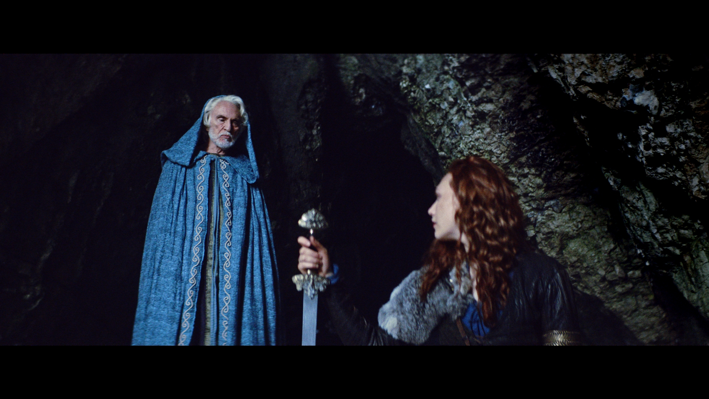

Till Start
Sandra Andersson
Hej, Sandra här!
Jag är 30 år gammal och bor i Göteborg och studerar på NBI-Handelshögskola.

Passioner
DnD och äventyr klingar starkt i detta hjärta men det var min fascination för datorer och teknologi som tog mig till den IT-utbildning jag nu går.
3 Styrkor
- Bra på att strukturera och planera
- Jag är kreativ
- Toppen på problemlösning
Arbetserfarenhet
Jag har tidigare jobbat som klippass, colorist och sändningsproducent på olika företag.
Till Start